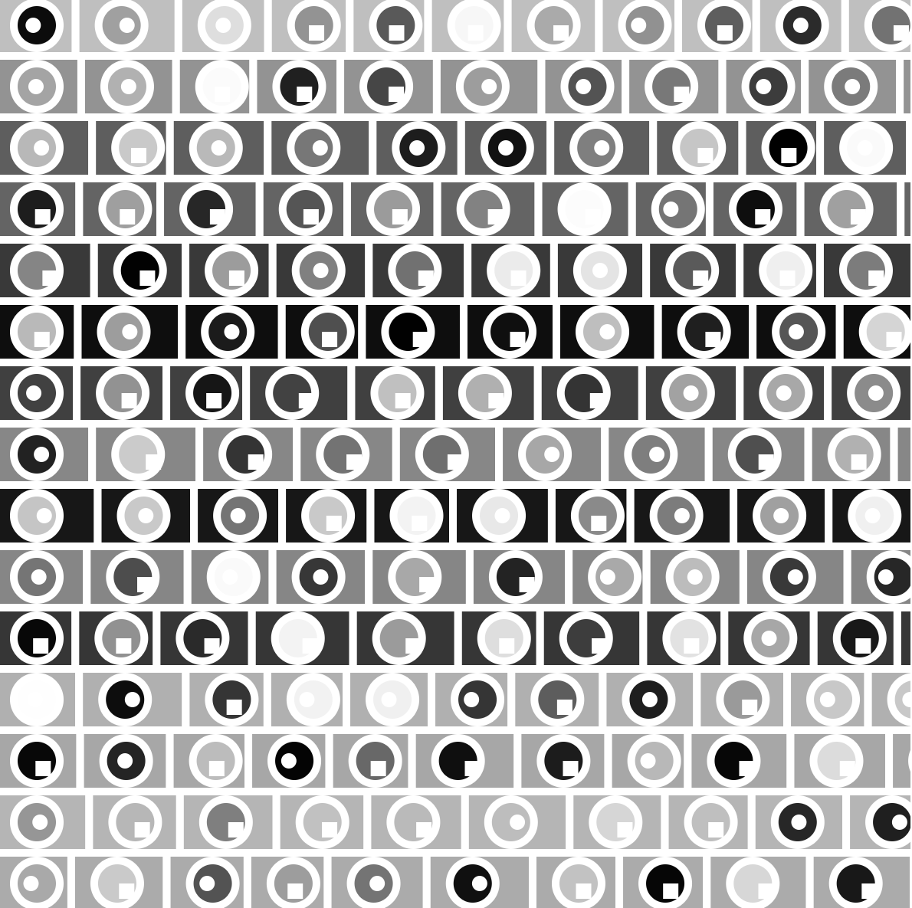
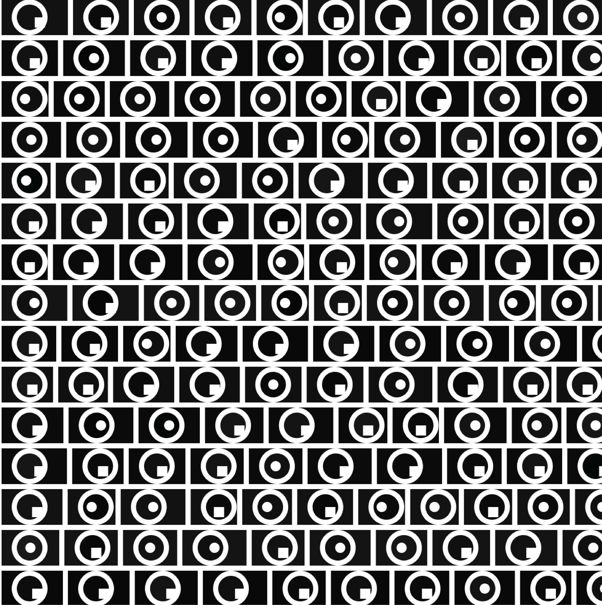
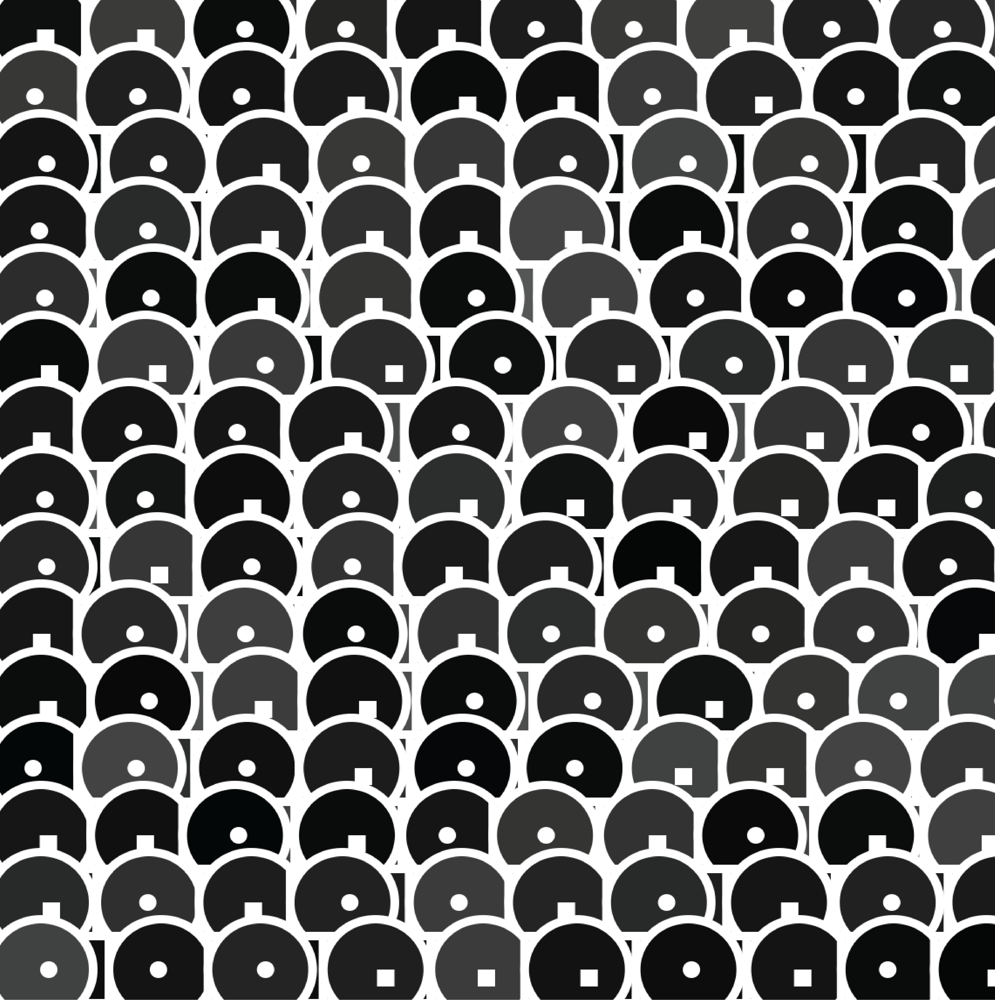
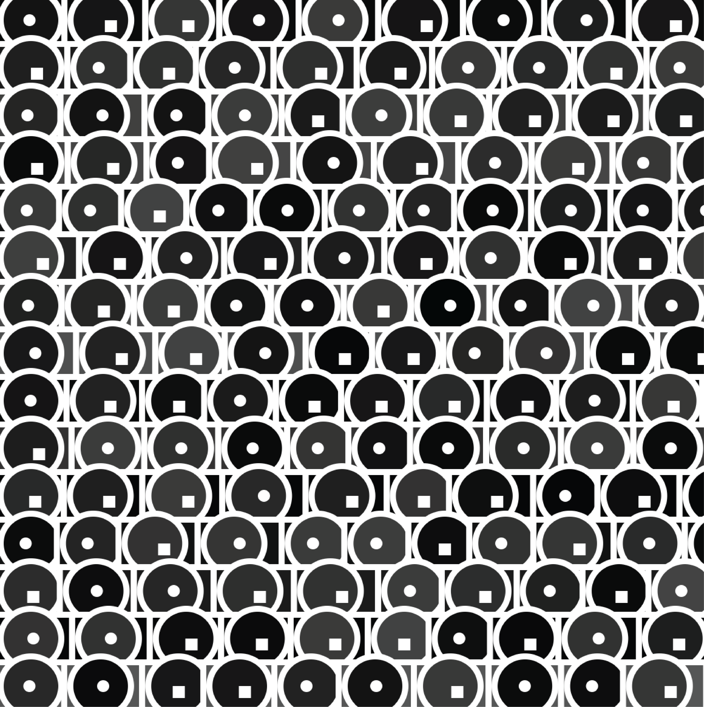
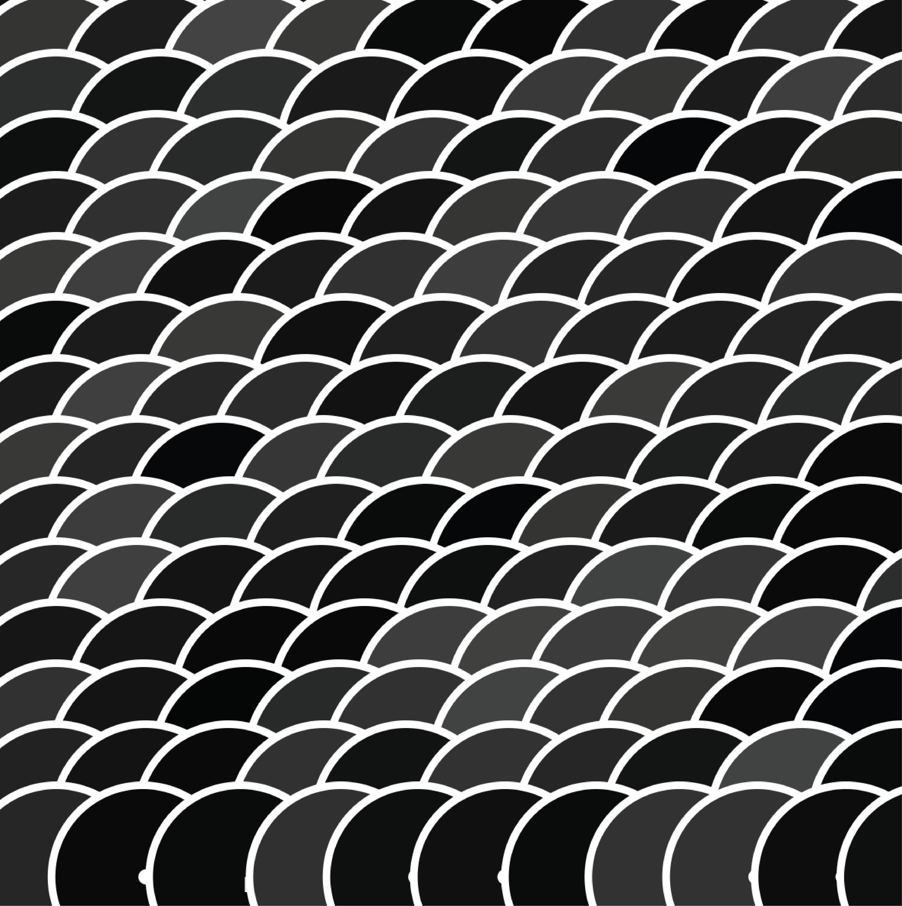

SMALL MULTIPLES
"SMALL MULTIPLES" IS A DATA VISUALIZATION TECHNIQUE INVOLVING THE PRESENTATION OF MULTIPLE SIMILAR CHARTS
SIDE BY SIDE FOR COMPARISON. FOR MY TASK, I WAS TASKED WITH WRITING A CODE TO GENERATE DIVERSE IMAGES USING
RANDOMLY SELECTED DATA. HOWEVER, I STRUGGLED TO MAINTAIN COHERENCE AMONG THESE IMAGES DESPITE MY EFFORTS TO
CONTROL THE RANDOMNESS WITHIN THE CODE.

BY ADJUSTING PARAMETERS, I COULD CREATE DIFFERENT VERSIONS OF A PATTERN, DISCOVERING BEAUTY IN ITS
RANDOMNESS.
HERE ARE SOME EXAMPLES OF THE OUTCOMES I ACHIEVED BY ALTERING THE POSITIONS AND COLORS OF GEOMETRIC OBJECTS.



